library(ggplot2)
library(gridExtra)
library(GGally)
library(moments)
library(knitr)
library(MASS)Transformations to Normality
1 Introduction
The pattern of values obtained when a variable is measured in a large number of individuals is called a distribution. Distributions can be broadly classified as normal and non-normal. The normal distribution is also called ‘Gaussian distribution’ as it was first described by K.F. Gauss. This chapter outlines the process of transforming data to achieve a normal distribution in R. Parametric methods, such as t-tests and ANOVA, require that the dependent (outcome) variable is approximately normally distributed within each group being compared. When the normality assumption is not satisfied, transforming the data can correct the non-normal distributions. For t-tests and ANOVA, it is sufficient to transform the dependent variable. However, for linear regression, transformations may be applied to the independent variable, the dependent variable, or both to achieve a linear relationship between variables and ensure homoscedasticity.
Here are the libraries we will use for this material:
2 When to Apply Transformations to Normality
One of the critical assumptions of statistical hypothesis testing is that the data are samples from a normal distribution. Therefore, it is essential to identify whether distributions are skewed or normal. There are several straightforward methods to detect skewness. Firstly, if the mean is less than twice the standard deviation, the distribution is likely skewed. Additionally, in a normally distributed population, the mean and standard deviation of the samples are independent. This characteristic can be used to detect skewness; if the standard deviation increases as the mean increases across groups from a population, the distribution is skewed. Beyond these simple methods, normality can be verified using statistical tests such as the Shapiro-Wilk test, the Kolmogorov-Smirnov test, and the Anderson-Darling test. Additionally, the moments package in R can be used to calculate skewness quantitatively. The skewness is determined using the third standardized moment, providing a measure of the asymmetry of the data distribution. If skewness is identified, efforts should be made to transform the data to achieve a normal distribution. This transformation is crucial for applying robust parametric tests in the analysis.
Transformations can also be employed to facilitate comparison and interpretation. A classical example of a variable commonly reported after logarithmic transformation is the hydrogen ion concentration (pH). Another instance where transformation aids in data comparison is the logarithmic transformation of a dose-response curve. When plotted, the dose-response relationship is curvilinear; however, plotting the response against the logarithm of the dose (log dose-response plot) results in an elongated S-shaped curve. The middle portion of this curve forms a straight line, making it easier to compare two straight lines by measuring their slopes than to compare two curves. Thus, transformation can significantly enhance data comparison.
In summary, transformations can be applied to normalize data distribution or to simplify interpretation and comparison.
3 Types of Transformations to Normality
Often, the transformation that normalizes the distribution also equalizes the variance. While there are several types of transformations available, such as logarithmic, square root, reciprocal, cube root, and Box-Cox, the first three are the most commonly used. Among the transformations discussed in this section, the logarithmic transformation is the most often used. The following guidelines can help in selecting the appropriate method of transformation:
3.1 Logarithmic Transformation
If the standard deviation is proportional to the mean, the distribution is positively skewed, making logarithmic transformation ideal. Note that when using a log transformation, a constant should be added to all values to ensure they are positive before transformation. The log tranformation is \[ y' = \log(y + c), \] where \(y\) is the original value and \(c\) is a constant added to ensure all values are positive.
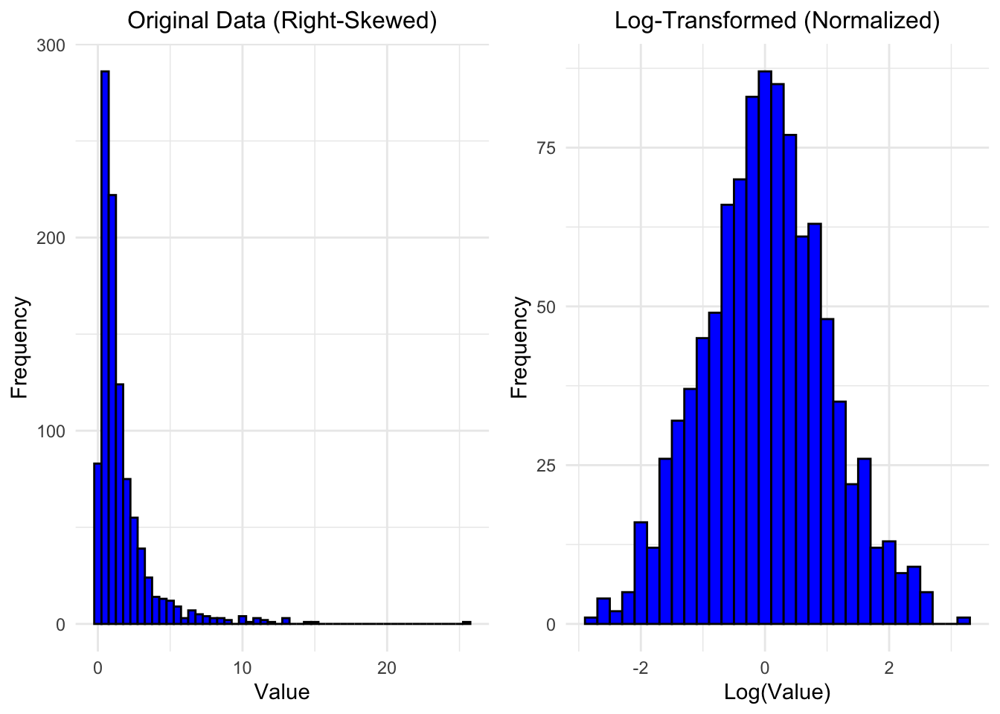
3.2 Square Root Transformation
When the variance is proportional to the mean, square root transformation is preferred. This is particularly applicable to variables measured as counts, such as the number of malignant cells in a microscopic field or the number of deaths from swine flu. The square root transformation is: \[ y' = \sqrt{y}. \]
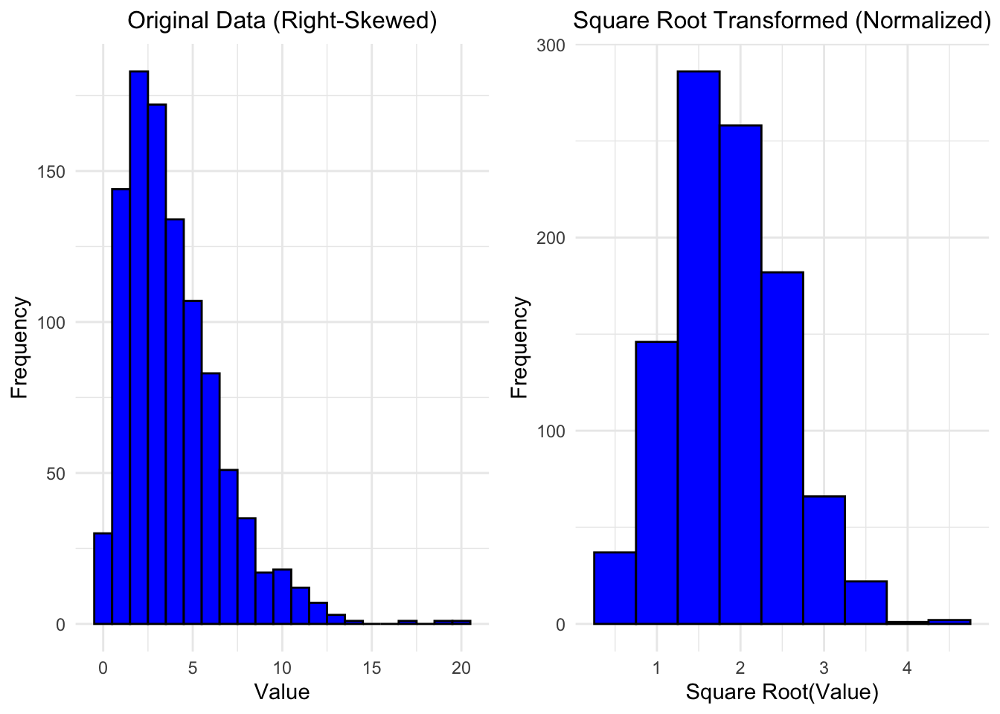
3.3 Arithmetic Reciprocal Transformation
If the observations are truncated on the right (such as often the case for academic grade distributions), then one preliminary transformation is to “reverse” the values by subtracting each value from the maximum of all observed values (or from the maximum possible value for observations on a defined scale). This operation “flips” the data distribution from having a heavy left tail to having a heavy right tail, which allows us to perform a secondary transformation (such as a log or square root). This transformation is: \[ y' = \max(y) - y. \]
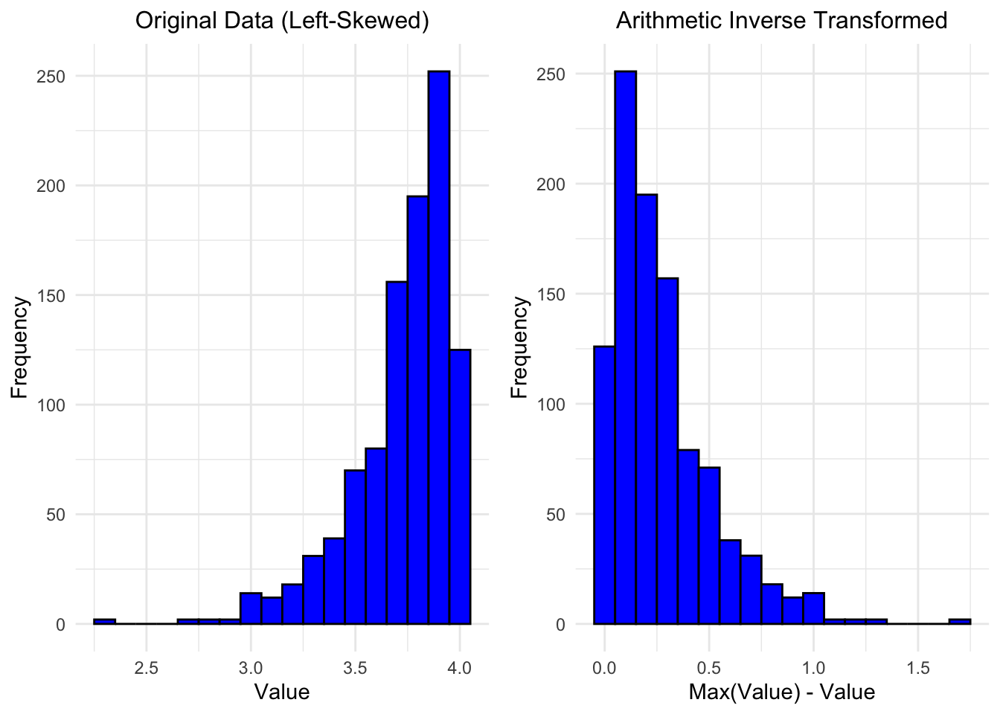
NOTE: now that the data are right-skewed, other transformations can be applied as usual.
3.4 Geometric Reciprocal Transformation
If the standard deviation is proportional to the mean squared, a reciprocal transformation is appropriate. This is typically used for highly variable quantities, such as serum creatinine levels. Note that this transformation requires all values to be positive or all values to be negative before applying it. \[ y' = \frac{1}{y \pm c}, \] where \(y\) is the original value and \(c\) is a constant added (subtracted) to ensure all values are positive (negative).
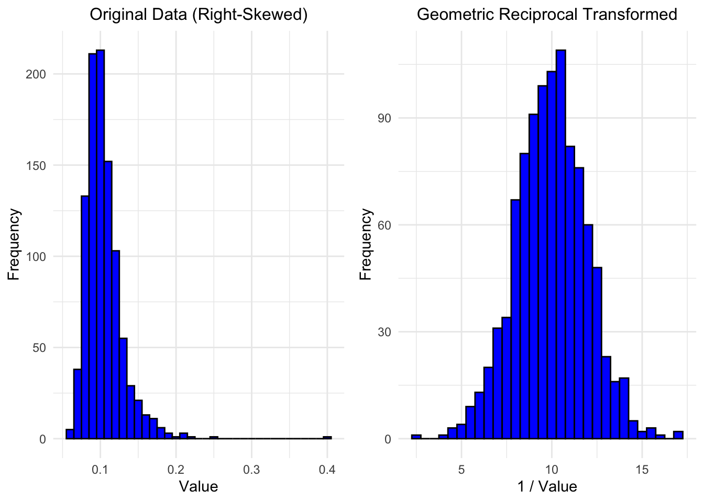
3.5 Box-Cox Transformation
The Box-Cox transformation is a family of power transformations that can be used to stabilize variance and make the data more closely conform to a normal distribution, especially when the best power transformation (e.g., square root, logarithmic) is uncertain. By estimating an optimal parameter \(\lambda\) from the data, the Box-Cox transformation tailors the transformation to the specific dataset’s needs. The transformation is defined as:
\[ y(\lambda) = \begin{cases} \frac{y^\lambda - 1}{\lambda} & \text{if } \lambda \neq 0 \\ \log(y) & \text{if } \lambda = 0 \end{cases} \] Here, \(\lambda\) is a parameter that is estimated from the data. The Box-Cox transformation is particularly useful because it includes many of the other transformations (such as the logarithmic and square root transformations) as special cases.
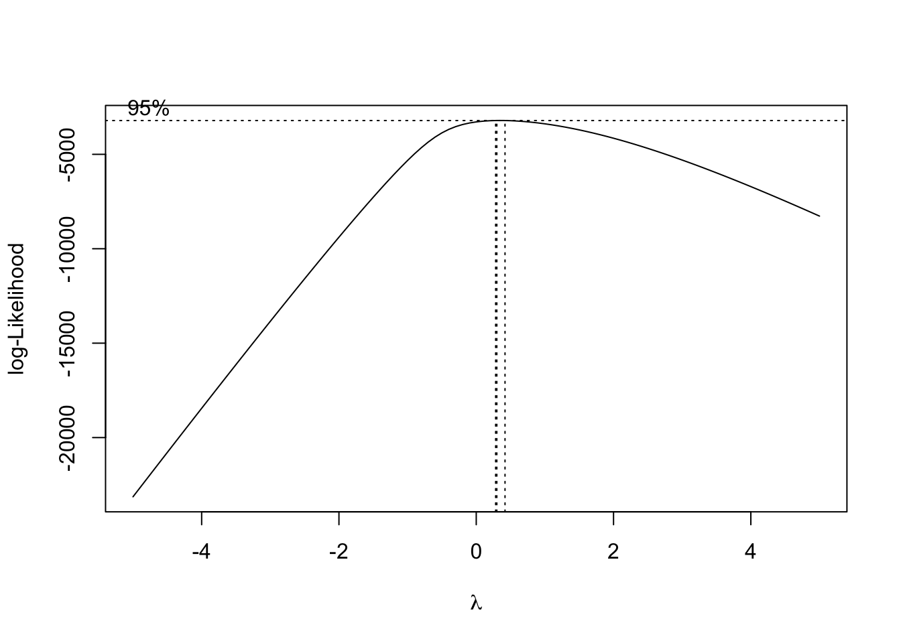
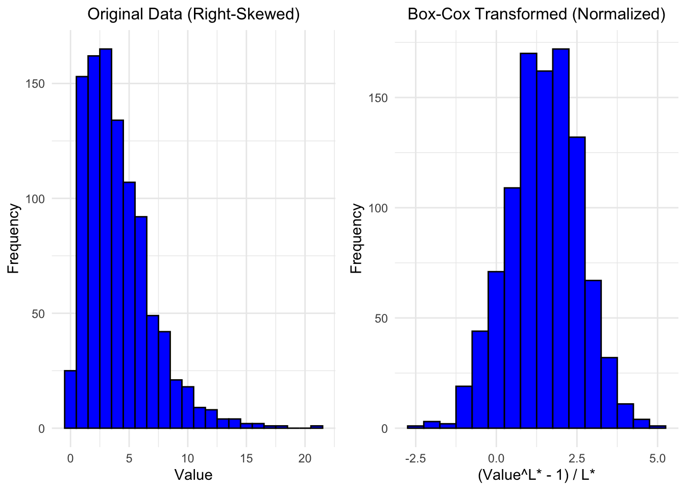
4 Examples of Transformations to Normality
4.1 Data Source and Description
The USJudgeRatings dataset is a built-in dataset in R that contains ratings of 43 judges in the US Superior Court. The ratings are based on the evaluations from lawyers who have had cases before these judges. The dataset includes multiple variables that represent different aspects of the judges’ performance.
4.1.1 Variables in the Dataset
CONT: Judicial “controlling” or authoritative nature.INTG: Judicial integrity.DMNR: Judicial demeanor.DILG: Judicial diligence.CFMG: Case flow management.DECI: Judicial decision-making.PREP: Judicial preparation.FAMI: Familiarity with the law.ORAL: Oral skills.WRIT: Written skills.PHYS: Physical ability.RTEN: Willingness to follow trends.
This dataset is useful for analyzing various performance metrics of judges and can be used to explore relationships between different aspects of judicial performance. In the following examples, we’ll consider two variables:
CONT: Number of contacts of lawyer with judge. Positively skewed.PHYS: Physical ability. Negatively skewed
4.2 Loading the Data
# Load the USJudgeRatings dataset
data("USJudgeRatings")
df <- USJudgeRatings
# Display the first few rows of the dataset
head(df) CONT INTG DMNR DILG CFMG DECI PREP FAMI ORAL WRIT PHYS RTEN
AARONSON,L.H. 5.7 7.9 7.7 7.3 7.1 7.4 7.1 7.1 7.1 7.0 8.3 7.8
ALEXANDER,J.M. 6.8 8.9 8.8 8.5 7.8 8.1 8.0 8.0 7.8 7.9 8.5 8.7
ARMENTANO,A.J. 7.2 8.1 7.8 7.8 7.5 7.6 7.5 7.5 7.3 7.4 7.9 7.8
BERDON,R.I. 6.8 8.8 8.5 8.8 8.3 8.5 8.7 8.7 8.4 8.5 8.8 8.7
BRACKEN,J.J. 7.3 6.4 4.3 6.5 6.0 6.2 5.7 5.7 5.1 5.3 5.5 4.8
BURNS,E.B. 6.2 8.8 8.7 8.5 7.9 8.0 8.1 8.0 8.0 8.0 8.6 8.64.3 Visualizations of CONT and PHYS Variables
ggplot(df) +
aes(x = CONT) +
scale_x_continuous(limits = c(3, 12))+
labs(title = "Density Plot of CONT", x = "CONT", y = "Density") +
geom_density(fill = "lightgray") +
stat_function(
fun = dnorm,
args = list(mean = mean(df$CONT), sd = sd(df$CONT)),
color = "red",
linetype = "dashed"
)
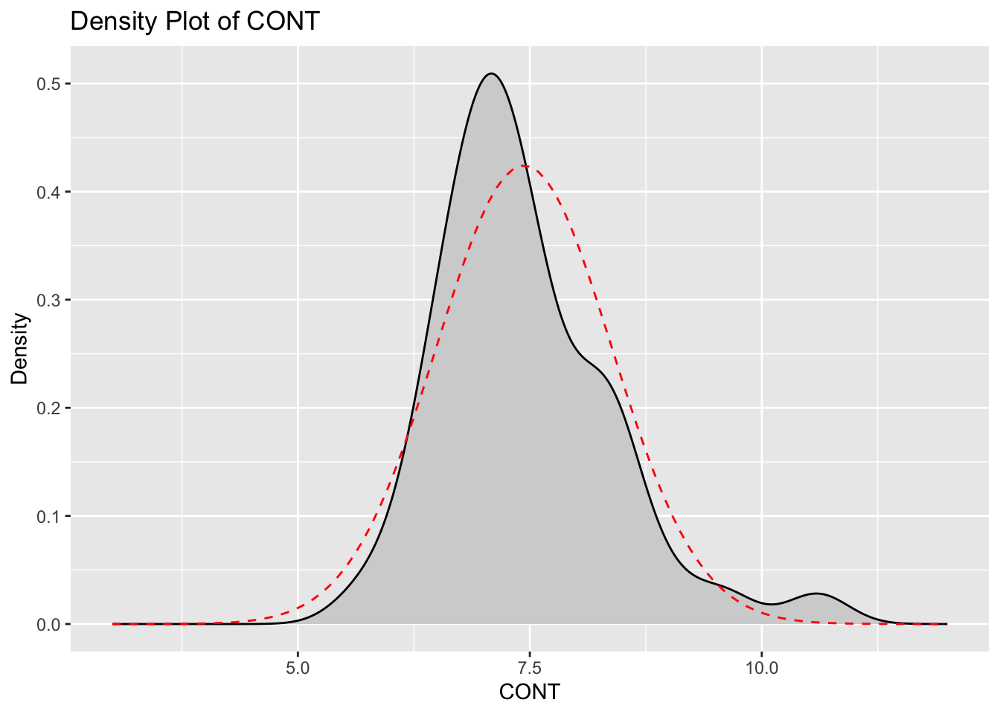
ggplot(df) +
aes(x = PHYS) +
scale_x_continuous(limits = c(3, 12)) +
labs(title = "Density Plot of PHYS", x = "PHYS", y = "Density") +
geom_density(fill = "lightgray") +
stat_function(
fun = dnorm,
args = list(mean = mean(df$PHYS), sd = sd(df$PHYS)),
color = "red",
linetype = "dashed"
)
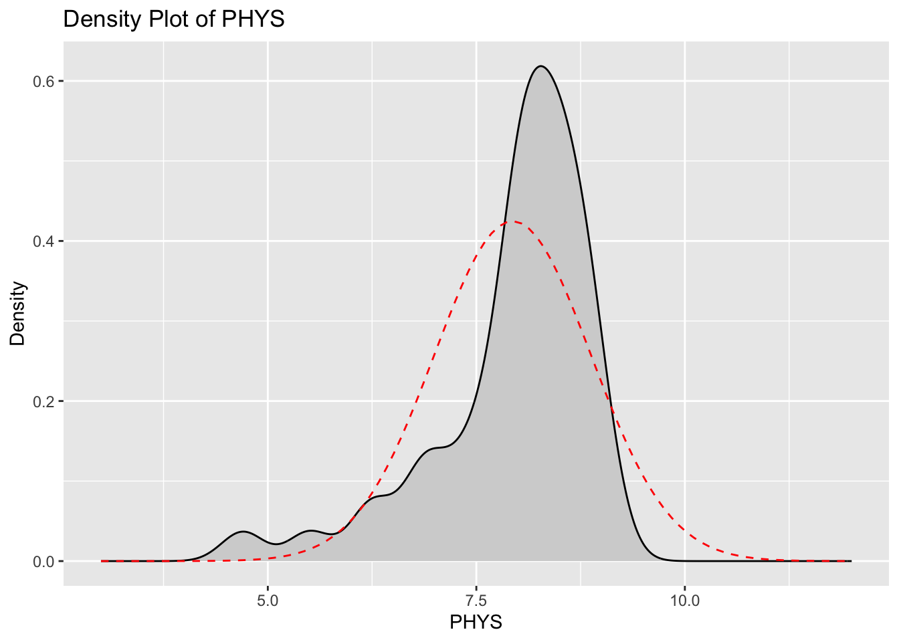
4.4 Summary Statistics for CONT and PHYS Variables
# Get the summary statistics for CONT and PHYS variables; note that the
# summary() function returns a named numeric vector, so to preserve the names
# we transform this vector to a matrix first (before creating the data frame).
summary_df <- data.frame(
CONT = as.matrix(summary(df$CONT)),
PHYS = as.matrix(summary(df$PHYS))
)
# Display summary statistics as a table
kable(summary_df)| CONT | PHYS | |
|---|---|---|
| Min. | 5.700000 | 4.700000 |
| 1st Qu. | 6.850000 | 7.700000 |
| Median | 7.300000 | 8.100000 |
| Mean | 7.437209 | 7.934884 |
| 3rd Qu. | 7.900000 | 8.500000 |
| Max. | 10.600000 | 9.100000 |
4.5 Skewness and Kurtosis for CONT and PHYS Variables
# Calculate skewness and kurtosis for CONT and PHYS variables with moments::
skewness_vals <- sapply(df[, c("CONT", "PHYS")], moments::skewness)
kurtosis_vals <- sapply(df[, c("CONT", "PHYS")], moments::kurtosis)
# Create a data frame to display skewness and kurtosis
skew_kurt_df <- data.frame(
Skewness = skewness_vals,
Kurtosis = kurtosis_vals
)
# Display the data frame as a table
kable(skew_kurt_df)| Skewness | Kurtosis | |
|---|---|---|
| CONT | 1.085973 | 4.729637 |
| PHYS | -1.558215 | 5.408086 |
4.6 Visualizations of Transformed CONT and PHYS Variables
We will first apply a natural log transformation to the “controlling/authoritarian” variable.
# Apply log transformation to CONT variable
df$LOG_CONT <- log(df$CONT)
# Plot density of log-transformed CONT variable
ggplot(df) +
aes(x = LOG_CONT) +
geom_density(fill = "lightgray") +
labs(
title = "Density Plot of Log-Transformed CONT",
x = "Log-Transformed CONT",
y = "Density"
) +
stat_function(
fun = dnorm,
args = list(mean = mean(df$LOG_CONT), sd = sd(df$LOG_CONT)),
color = "red",
linetype = "dashed"
)
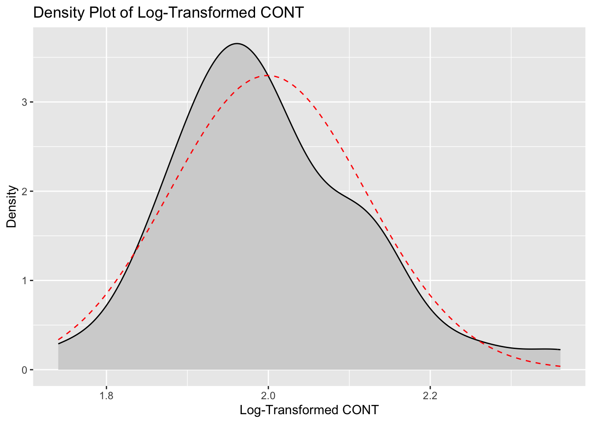
Now we will apply a Box-Cox transformation to the “physical ability” variable.
# Apply Box-Cox transformation to PHYS using MASS:: package
bc <- MASS::boxcox(df$PHYS ~ 1, lambda = seq(-5, 5, 0.1), plotit = TRUE)
lambda <- bc$x[which.max(bc$y)]
df$BOX_COX_PHYS <- (df$PHYS^lambda - 1) / lambda
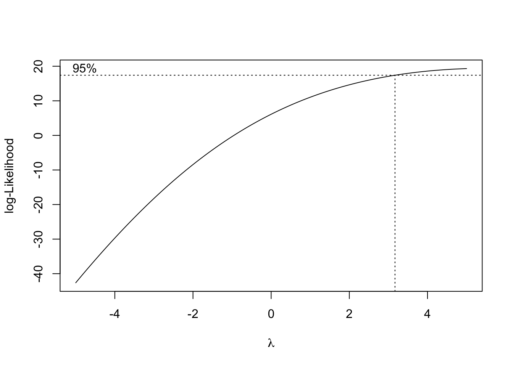
boxcox function
# Plot density of Box-Cox transformed PHYS variable
ggplot(df) +
aes(x = BOX_COX_PHYS) +
labs(
title = "Density Plot of Box-Cox Transformed PHYS",
x = "Box-Cox Transformed PHYS",
y = "Density"
) +
geom_density(fill = "lightgray") +
stat_function(
fun = dnorm,
args = list(mean = mean(df$BOX_COX_PHYS), sd = sd(df$BOX_COX_PHYS)),
color = "red",
linetype = "dashed"
)
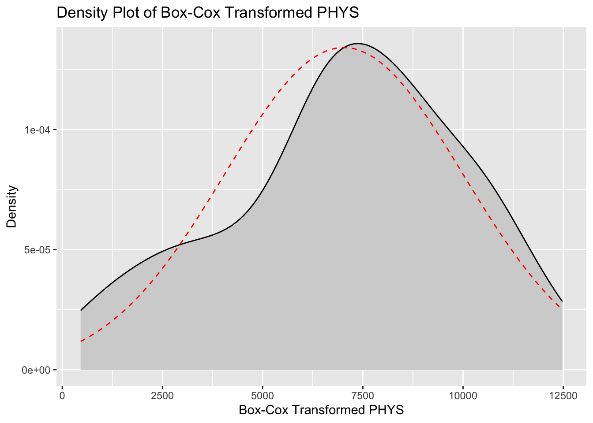
4.7 Skewness and Kurtosis for Transformed CONT and PHYS Variables
# Calculate skewness and kurtosis for transformed variables
skewness_vals_trans <- sapply(df[, c("LOG_CONT", "BOX_COX_PHYS")], skewness)
kurtosis_vals_trans <- sapply(df[, c("LOG_CONT", "BOX_COX_PHYS")], kurtosis)
# Create a data frame to display skewness and kurtosis for transformed variables
skew_kurt_df_trans <- data.frame(
Skewness = skewness_vals_trans,
Kurtosis = kurtosis_vals_trans
)
# Display the data frame as a table
kable(skew_kurt_df_trans)| Skewness | Kurtosis | |
|---|---|---|
| LOG_CONT | 0.6555572 | 3.758254 |
| BOX_COX_PHYS | -0.3813574 | 2.501916 |
5 Results
The application of log and Box-Cox transformations has effectively improved the normality of the CONT and PHYS variables, respectively. For the CONT variable, the original distribution exhibited a positive skewness of 1.086 and a kurtosis of 4.730, indicating a right-skewed distribution with heavy tails and a sharp peak. The log transformation reduced the skewness to 0.656 and the kurtosis to 3.758, demonstrating a significant move towards normality, though the distribution still retains some right-skewness and heavier tails compared to a normal distribution. The PHYS variable originally had a negative skewness of -1.558 and a kurtosis of 5.408, reflecting a left-skewed distribution with heavy tails and a pronounced peak. Following the Box-Cox transformation, the skewness was reduced to -0.381 and the kurtosis to 2.502. These results indicate that the transformed PHYS distribution is much closer to normality, with reduced skewness and lighter tails, achieving a more symmetric distribution. In summary, the transformations have substantially mitigated the skewness and kurtosis of both variables, enhancing their suitability for statistical analyses that assume normality. This adjustment ensures more reliable and valid results in subsequent analyses.
6 Conclusion and Discussion
The transformations applied to the CONT and PHYS variables demonstrate the effectiveness of data transformation techniques in improving the normality of distributions. By addressing skewness and kurtosis, transformations like the log and Box-Cox methods help in stabilizing variance and making data more symmetric. This enhancement is crucial for statistical analyses that rely on the assumption of normality, ensuring more accurate and reliable results. Overall, the use of appropriate transformations is a vital step in data preprocessing, significantly enhancing the suitability of data for various analytical procedures and improving the robustness of statistical inferences. However, caution is warranted in the interpretation of results after transformation. Transformed data can sometimes complicate the understanding of results and their real-world implications, as the transformed scale may not directly relate to the original measurements. It is essential to back-transform results when interpreting findings to ensure they are meaningful and relevant to the original context.
7 References
- Manikandan S. (2010). Data transformation. Journal of pharmacology & pharmacotherapeutics, 1(2), 126–127. https://doi.org/10.4103/0976-500X.72373
- West R. M. (2022). Best practice in statistics: The use of log transformation. Annals of clinical biochemistry, 59(3), 162–165. https://doi.org/10.1177/00045632211050531
- Lee D. K. (2020). Data transformation: a focus on the interpretation. Korean journal of anesthesiology, 73(6), 503–508. https://doi.org/10.4097/kja.20137